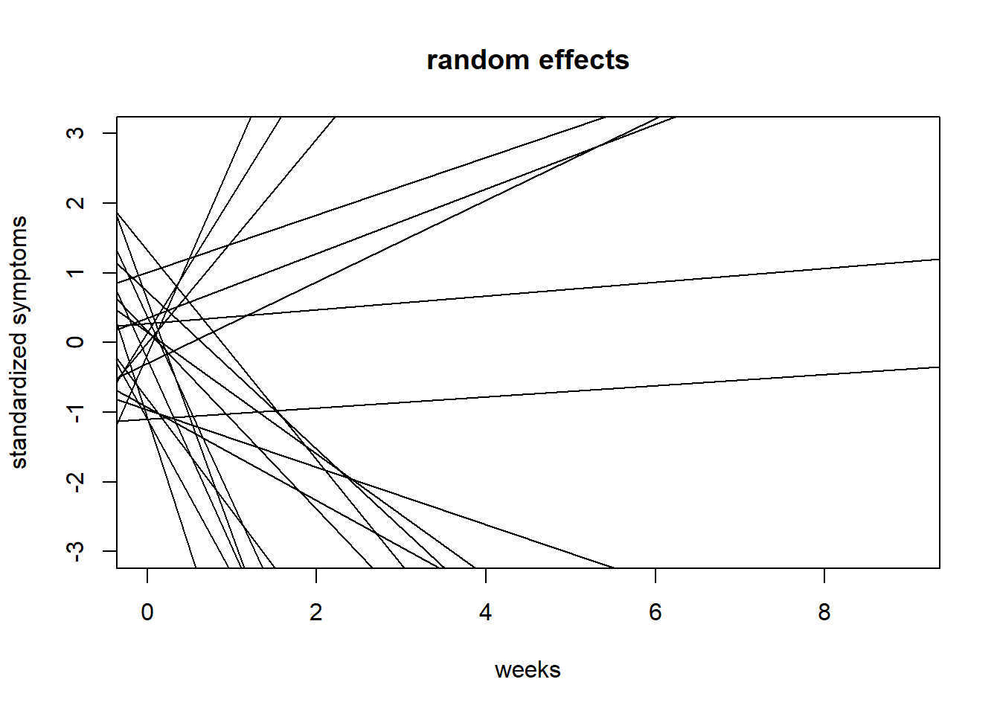
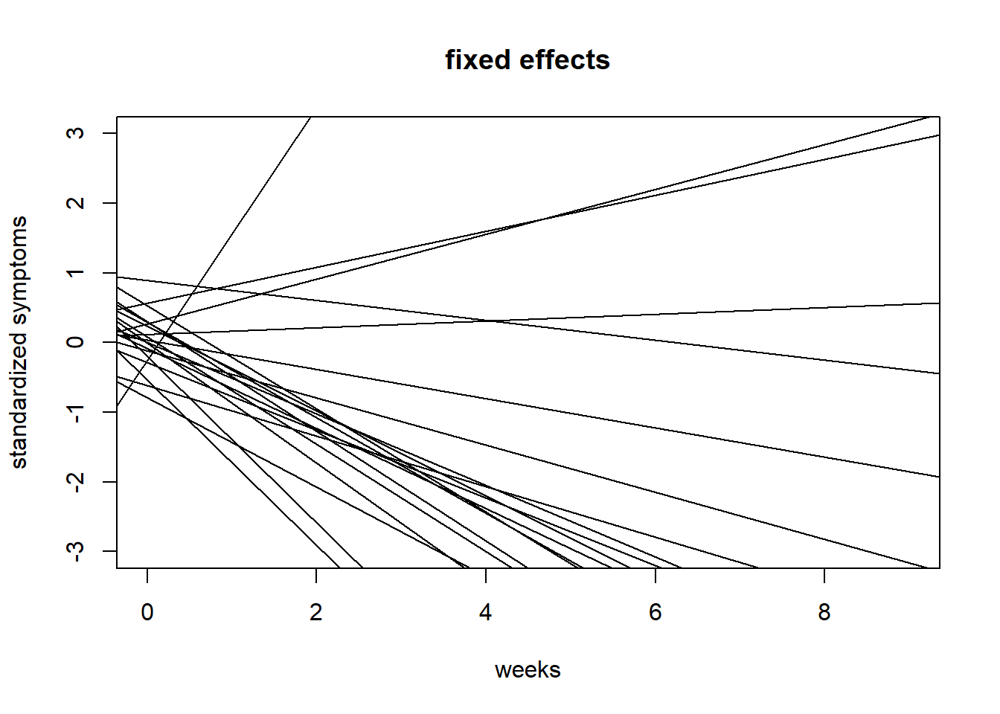
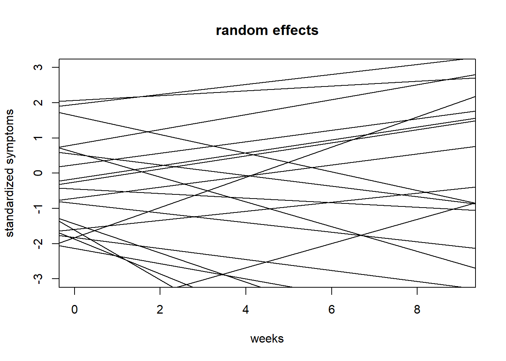
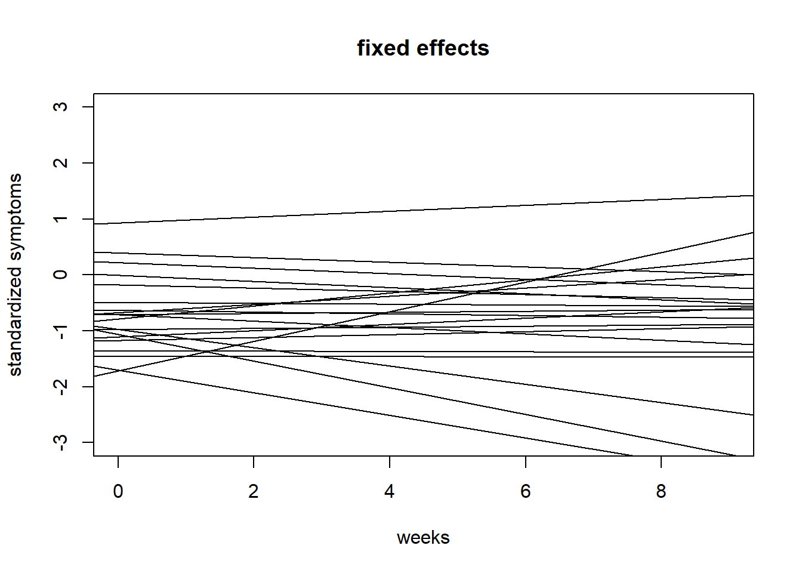

#function that simulates data
long.data.sim <- function(n = 30, avg_slope = 0.1, slope_intercept_correlation = -0.15, slope_sigma = 0.1, nweeks = 10, error = 0.3){
intercepts <- rnorm(n, m = 0, sd = 1)
slopes <- avg_slope + (slope_intercept_correlation*intercepts + rnorm(n,m=0,sd=sqrt(1-slope_intercept_correlation^2)) )*slope_sigma
weeks <- 0:(nweeks-1)
df <- data.frame()
for(i in 1:n){
err <- rnorm(nweeks, m = 0, sd = error) #will equal residual std.dev. = sigma(mdl)
df <- rbind.data.frame(df,data.frame(id=rep(i, times = nweeks),y=intercepts[i]+slopes[i]*weeks+err,weeks))
}
return(df)
}
#generate data
d <- long.data.sim(n = 20, avg_slope = 0.2, slope_intercept_correlation = -0.15, slope_sigma = 0.1, nweeks = 10, error = 0.3)
#Let's also see if it runs if some patients have missing data some weeks (it will)
d <- d[-sample(1:nrow(d), 15, replace = FALSE),]Stats2IndividualAssignment
Rethinking Statistics
My data and model
My data will be self-rated GAD-7 scores from a clinical trial. Patients receive one out of two possible active treatments over ten weeks. I want to use multi-level modeling to model the effect of treatment over time, and compare that between treatments.
The formula is presented below for 20 patients (\(j\)). My outcome \(y\) is GAD-7 score. \(time\) will be the week the measurement comes from, ranging from 0 to 9, so that the intercepts \(\alpha\) represent model estimations at start of treatment.
\[ \begin{align*} y_i \sim Normal(\mu_i,\sigma) \\ \mu_{i,j} = \alpha_{patient[i]} \ + \ \beta_{patient[i]}*time_i \\ \alpha_j \sim Normal(\bar{\alpha},\sigma_a) \ \ ,for \ j = 1,2,...20 \\ \bar{\alpha} \sim Normal(0,1) \\ \sigma_a \sim Exponential(1) \\ \beta_j \sim Normal(\bar{\beta},\sigma_b) \ \ ,for \ j = 1,2,...20 \\ \bar{\beta} \sim Normal(0,1) \\ \sigma_b \sim Exponential(1) \\ \sigma \sim Exponential(1) \end{align*} \]
I have not figured out how to specify a group effect yet but one cheap solution is to just fit two models and compare. In this case that solution is probably adequate since I don’t want the estimate for group A to affect the estimate from group B anyway. However, in time I want to look at contrasts between competing mediators and then it may be better to include group as a factor.
I have a function that generates data in long format from a previous project. Since the data simulates intercepts ~ Normal(0,1), it can be read as if I were to standardize the scores at week 0. With this standardization the avg_slope argument times the length of the treatment nweeks corresponds to the standardized effect size for growth models following Feingold (2007).
I then built the models step by step increasing complexity.
#single level model (with quadratic aproximation)
mdl_non <- quap(alist(
y ~ dnorm(mu,sigma),
mu <- a + b*weeks,
a ~ dnorm(0,1),
b ~ dnorm(0,0.3),
sigma ~ dexp(1)
), data = d)
precis(mdl_non) mean sd 5.5% 94.5%
a 0.07157867 0.14607351 -0.161875 0.3050323
b 0.21349254 0.02770973 0.169207 0.2577780
sigma 1.09237163 0.05654070 1.002009 1.1827346#multi-level model, random intercepts.
mdl_random_intercept <- ulam(alist(
y ~ dnorm(mu,sigma),
mu <- a[id] + b*weeks,
a[id] ~ dnorm(a_bar,sigma_a),
a_bar ~ dnorm(0,1),
sigma_a ~ dexp(1),
b ~ dnorm(0,0.3),
sigma ~ dexp(1)
), data = d, chains = 4, cores = 4)In file included from stan/lib/stan_math/stan/math/prim/prob/von_mises_lccdf.hpp:5,
from stan/lib/stan_math/stan/math/prim/prob/von_mises_ccdf_log.hpp:4,
from stan/lib/stan_math/stan/math/prim/prob.hpp:356,
from stan/lib/stan_math/stan/math/prim.hpp:16,
from stan/lib/stan_math/stan/math/rev.hpp:14,
from stan/lib/stan_math/stan/math.hpp:19,
from stan/src/stan/model/model_header.hpp:4,
from C:/Users/vilgo/AppData/Local/Temp/Rtmpy0zvj8/model-28bc500540dc.hpp:2:
stan/lib/stan_math/stan/math/prim/prob/von_mises_cdf.hpp: In function 'stan::return_type_t<T_x, T_sigma, T_l> stan::math::von_mises_cdf(const T_x&, const T_mu&, const T_k&)':
stan/lib/stan_math/stan/math/prim/prob/von_mises_cdf.hpp:194: note: '-Wmisleading-indentation' is disabled from this point onwards, since column-tracking was disabled due to the size of the code/headers
194 | if (cdf_n < 0.0)
| stan/lib/stan_math/stan/math/prim/prob/von_mises_cdf.hpp:194: note: adding '-flarge-source-files' will allow for more column-tracking support, at the expense of compilation time and memoryRunning MCMC with 4 parallel chains, with 1 thread(s) per chain...
Chain 1 Iteration: 1 / 1000 [ 0%] (Warmup)
Chain 1 Iteration: 100 / 1000 [ 10%] (Warmup)
Chain 1 Iteration: 200 / 1000 [ 20%] (Warmup)
Chain 1 Iteration: 300 / 1000 [ 30%] (Warmup)
Chain 1 Iteration: 400 / 1000 [ 40%] (Warmup)
Chain 2 Iteration: 1 / 1000 [ 0%] (Warmup)
Chain 2 Iteration: 100 / 1000 [ 10%] (Warmup)
Chain 3 Iteration: 1 / 1000 [ 0%] (Warmup)
Chain 3 Iteration: 100 / 1000 [ 10%] (Warmup) Chain 3 Informational Message: The current Metropolis proposal is about to be rejected because of the following issue:Chain 3 Exception: normal_lpdf: Scale parameter is 0, but must be positive! (in 'C:/Users/vilgo/AppData/Local/Temp/Rtmpy0zvj8/model-28bc500540dc.stan', line 19, column 4 to column 34)Chain 3 If this warning occurs sporadically, such as for highly constrained variable types like covariance matrices, then the sampler is fine,Chain 3 but if this warning occurs often then your model may be either severely ill-conditioned or misspecified.Chain 3 Chain 4 Iteration: 1 / 1000 [ 0%] (Warmup)
Chain 1 Iteration: 500 / 1000 [ 50%] (Warmup)
Chain 1 Iteration: 501 / 1000 [ 50%] (Sampling)
Chain 1 Iteration: 600 / 1000 [ 60%] (Sampling)
Chain 1 Iteration: 700 / 1000 [ 70%] (Sampling)
Chain 1 Iteration: 800 / 1000 [ 80%] (Sampling)
Chain 1 Iteration: 900 / 1000 [ 90%] (Sampling)
Chain 1 Iteration: 1000 / 1000 [100%] (Sampling)
Chain 1 finished in 0.2 seconds.
Chain 2 Iteration: 200 / 1000 [ 20%] (Warmup)
Chain 2 Iteration: 300 / 1000 [ 30%] (Warmup)
Chain 2 Iteration: 400 / 1000 [ 40%] (Warmup)
Chain 2 Iteration: 500 / 1000 [ 50%] (Warmup)
Chain 2 Iteration: 501 / 1000 [ 50%] (Sampling)
Chain 2 Iteration: 600 / 1000 [ 60%] (Sampling)
Chain 2 Iteration: 700 / 1000 [ 70%] (Sampling)
Chain 2 Iteration: 800 / 1000 [ 80%] (Sampling)
Chain 2 Iteration: 900 / 1000 [ 90%] (Sampling)
Chain 2 Iteration: 1000 / 1000 [100%] (Sampling)
Chain 2 finished in 0.2 seconds.
Chain 3 Iteration: 200 / 1000 [ 20%] (Warmup)
Chain 3 Iteration: 300 / 1000 [ 30%] (Warmup)
Chain 3 Iteration: 400 / 1000 [ 40%] (Warmup)
Chain 3 Iteration: 500 / 1000 [ 50%] (Warmup)
Chain 3 Iteration: 501 / 1000 [ 50%] (Sampling)
Chain 3 Iteration: 600 / 1000 [ 60%] (Sampling)
Chain 3 Iteration: 700 / 1000 [ 70%] (Sampling)
Chain 3 Iteration: 800 / 1000 [ 80%] (Sampling)
Chain 3 Iteration: 900 / 1000 [ 90%] (Sampling)
Chain 3 Iteration: 1000 / 1000 [100%] (Sampling)
Chain 3 finished in 0.2 seconds.
Chain 4 Iteration: 100 / 1000 [ 10%] (Warmup)
Chain 4 Iteration: 200 / 1000 [ 20%] (Warmup)
Chain 4 Iteration: 300 / 1000 [ 30%] (Warmup)
Chain 4 Iteration: 400 / 1000 [ 40%] (Warmup)
Chain 4 Iteration: 500 / 1000 [ 50%] (Warmup)
Chain 4 Iteration: 501 / 1000 [ 50%] (Sampling)
Chain 4 Iteration: 600 / 1000 [ 60%] (Sampling)
Chain 4 Iteration: 700 / 1000 [ 70%] (Sampling)
Chain 4 Iteration: 800 / 1000 [ 80%] (Sampling)
Chain 4 Iteration: 900 / 1000 [ 90%] (Sampling)
Chain 4 Iteration: 1000 / 1000 [100%] (Sampling)
Chain 4 finished in 0.2 seconds.
All 4 chains finished successfully.
Mean chain execution time: 0.2 seconds.
Total execution time: 0.4 seconds.precis(mdl_random_intercept, depth = 2) #seems to run fine with missing rows. mean sd 5.5% 94.5% rhat ess_bulk
a[1] -0.02520281 0.14921578 -0.26603355 0.21877512 1.0010833 2202.248
a[2] -1.10287172 0.13450625 -1.31535830 -0.89130662 1.0038579 3926.797
a[3] -0.73813835 0.13973373 -0.95917408 -0.51288988 1.0032422 3060.956
a[4] -0.65834556 0.13519752 -0.86900740 -0.44759664 1.0067085 3126.022
a[5] -1.15892221 0.13544008 -1.37606300 -0.94658577 1.0046948 3002.016
a[6] 0.75545638 0.13922541 0.53084204 0.97754093 0.9996994 2850.140
a[7] 0.06189972 0.13673783 -0.15652840 0.28013837 1.0027208 2742.055
a[8] -0.66021047 0.14058414 -0.87995546 -0.43961912 0.9990020 2557.988
a[9] 0.77055111 0.13624650 0.55998342 0.99166465 1.0018397 3225.269
a[10] 2.70448036 0.14066007 2.47965205 2.93030730 1.0014380 2975.519
a[11] 2.28466059 0.14146399 2.04461900 2.50176265 1.0026248 3201.186
a[12] 0.40256383 0.13609763 0.18062447 0.61482962 1.0008079 2271.321
a[13] -0.76115211 0.13820998 -0.98172314 -0.52767381 1.0057816 3545.426
a[14] -1.07380916 0.13974519 -1.30386230 -0.84637135 0.9989985 2880.575
a[15] 0.51210060 0.13764298 0.29422378 0.72660891 1.0080993 2904.486
a[16] -0.50313231 0.14101022 -0.73081864 -0.27814424 1.0016774 3045.534
a[17] 0.12823507 0.13916734 -0.09294399 0.34924909 1.0001611 2645.378
a[18] 0.35461277 0.13950420 0.13398911 0.57701194 1.0032782 3072.307
a[19] -0.15271404 0.14287922 -0.37555582 0.07263233 1.0015358 3385.546
a[20] 0.57261419 0.14237918 0.34603018 0.79546032 1.0028629 3044.263
a_bar 0.08987243 0.24292037 -0.27879912 0.48183952 1.0004217 3048.228
sigma_a 1.08438611 0.18586145 0.83071493 1.42053585 1.0031046 3442.261
b 0.21272936 0.01015007 0.19638681 0.22871962 1.0000291 1129.199
sigma 0.39928193 0.02262948 0.36390590 0.43656543 1.0156441 3378.770precis(mdl_random_intercept) #most relevant parameters20 vector or matrix parameters hidden. Use depth=2 to show them. mean sd 5.5% 94.5% rhat ess_bulk
a_bar 0.08987243 0.24292037 -0.2787991 0.4818395 1.000422 3048.228
sigma_a 1.08438611 0.18586145 0.8307149 1.4205358 1.003105 3442.261
b 0.21272936 0.01015007 0.1963868 0.2287196 1.000029 1129.199
sigma 0.39928193 0.02262948 0.3639059 0.4365654 1.015644 3378.770#multi-level model, random intercepts and slopes.
mdl_random <- ulam(alist(
y ~ dnorm(mu,sigma),
mu <- a[id] + b[id]*weeks,
a[id] ~ dnorm(a_bar,sigma_a),
a_bar ~ dnorm(0,1),
sigma_a ~ dexp(1),
b[id] ~ dnorm(b_bar,sigma_b),
b_bar ~ dnorm(0,1),
sigma_b ~ dexp(1),
sigma ~ dexp(1)
), data = d, chains = 4, cores = 4)In file included from stan/lib/stan_math/stan/math/prim/prob/von_mises_lccdf.hpp:5,
from stan/lib/stan_math/stan/math/prim/prob/von_mises_ccdf_log.hpp:4,
from stan/lib/stan_math/stan/math/prim/prob.hpp:356,
from stan/lib/stan_math/stan/math/prim.hpp:16,
from stan/lib/stan_math/stan/math/rev.hpp:14,
from stan/lib/stan_math/stan/math.hpp:19,
from stan/src/stan/model/model_header.hpp:4,
from C:/Users/vilgo/AppData/Local/Temp/Rtmpy0zvj8/model-28bc22401029.hpp:2:
stan/lib/stan_math/stan/math/prim/prob/von_mises_cdf.hpp: In function 'stan::return_type_t<T_x, T_sigma, T_l> stan::math::von_mises_cdf(const T_x&, const T_mu&, const T_k&)':
stan/lib/stan_math/stan/math/prim/prob/von_mises_cdf.hpp:194: note: '-Wmisleading-indentation' is disabled from this point onwards, since column-tracking was disabled due to the size of the code/headers
194 | if (cdf_n < 0.0)
| stan/lib/stan_math/stan/math/prim/prob/von_mises_cdf.hpp:194: note: adding '-flarge-source-files' will allow for more column-tracking support, at the expense of compilation time and memoryRunning MCMC with 4 parallel chains, with 1 thread(s) per chain...
Chain 1 Iteration: 1 / 1000 [ 0%] (Warmup)
Chain 1 Iteration: 100 / 1000 [ 10%] (Warmup)
Chain 1 Iteration: 200 / 1000 [ 20%] (Warmup)
Chain 2 Iteration: 1 / 1000 [ 0%] (Warmup)
Chain 2 Iteration: 100 / 1000 [ 10%] (Warmup)
Chain 3 Iteration: 1 / 1000 [ 0%] (Warmup)
Chain 4 Iteration: 1 / 1000 [ 0%] (Warmup)
Chain 4 Iteration: 100 / 1000 [ 10%] (Warmup)
Chain 1 Iteration: 300 / 1000 [ 30%] (Warmup)
Chain 1 Iteration: 400 / 1000 [ 40%] (Warmup)
Chain 1 Iteration: 500 / 1000 [ 50%] (Warmup)
Chain 1 Iteration: 501 / 1000 [ 50%] (Sampling)
Chain 1 Iteration: 600 / 1000 [ 60%] (Sampling)
Chain 1 Iteration: 700 / 1000 [ 70%] (Sampling)
Chain 2 Iteration: 200 / 1000 [ 20%] (Warmup)
Chain 2 Iteration: 300 / 1000 [ 30%] (Warmup)
Chain 2 Iteration: 400 / 1000 [ 40%] (Warmup)
Chain 2 Iteration: 500 / 1000 [ 50%] (Warmup)
Chain 2 Iteration: 501 / 1000 [ 50%] (Sampling)
Chain 2 Iteration: 600 / 1000 [ 60%] (Sampling)
Chain 2 Iteration: 700 / 1000 [ 70%] (Sampling)
Chain 3 Iteration: 100 / 1000 [ 10%] (Warmup)
Chain 3 Iteration: 200 / 1000 [ 20%] (Warmup)
Chain 3 Iteration: 300 / 1000 [ 30%] (Warmup)
Chain 3 Iteration: 400 / 1000 [ 40%] (Warmup)
Chain 3 Iteration: 500 / 1000 [ 50%] (Warmup)
Chain 3 Iteration: 501 / 1000 [ 50%] (Sampling)
Chain 3 Iteration: 600 / 1000 [ 60%] (Sampling)
Chain 4 Iteration: 200 / 1000 [ 20%] (Warmup)
Chain 4 Iteration: 300 / 1000 [ 30%] (Warmup)
Chain 4 Iteration: 400 / 1000 [ 40%] (Warmup)
Chain 4 Iteration: 500 / 1000 [ 50%] (Warmup)
Chain 4 Iteration: 501 / 1000 [ 50%] (Sampling)
Chain 4 Iteration: 600 / 1000 [ 60%] (Sampling)
Chain 1 Iteration: 800 / 1000 [ 80%] (Sampling)
Chain 1 Iteration: 900 / 1000 [ 90%] (Sampling)
Chain 2 Iteration: 800 / 1000 [ 80%] (Sampling)
Chain 2 Iteration: 900 / 1000 [ 90%] (Sampling)
Chain 2 Iteration: 1000 / 1000 [100%] (Sampling)
Chain 3 Iteration: 700 / 1000 [ 70%] (Sampling)
Chain 3 Iteration: 800 / 1000 [ 80%] (Sampling)
Chain 4 Iteration: 700 / 1000 [ 70%] (Sampling)
Chain 4 Iteration: 800 / 1000 [ 80%] (Sampling)
Chain 4 Iteration: 900 / 1000 [ 90%] (Sampling)
Chain 1 Iteration: 1000 / 1000 [100%] (Sampling)
Chain 1 finished in 0.5 seconds.
Chain 2 finished in 0.4 seconds.
Chain 3 Iteration: 900 / 1000 [ 90%] (Sampling)
Chain 3 Iteration: 1000 / 1000 [100%] (Sampling)
Chain 4 Iteration: 1000 / 1000 [100%] (Sampling)
Chain 3 finished in 0.5 seconds.
Chain 4 finished in 0.4 seconds.
All 4 chains finished successfully.
Mean chain execution time: 0.5 seconds.
Total execution time: 0.7 seconds.precis(mdl_random, depth = 2) mean sd 5.5% 94.5% rhat ess_bulk
a[1] 0.13763362 0.20401689 -0.192673100 0.453791880 1.0016809 2400.392
a[2] -1.16918868 0.18464673 -1.469531450 -0.868549215 1.0011623 2636.317
a[3] -0.63657915 0.18564790 -0.930696490 -0.333380320 1.0004997 3304.281
a[4] -0.94837438 0.18188301 -1.238314950 -0.646965225 1.0022509 2728.661
a[5] -0.70659566 0.18588272 -1.013064950 -0.407646580 1.0002304 2441.167
a[6] 0.49739330 0.19678131 0.186874515 0.809785695 1.0002165 2855.974
a[7] 0.02333268 0.18673091 -0.270914670 0.329632750 0.9999923 2491.078
a[8] -0.76884871 0.18410184 -1.058877250 -0.469463195 0.9991601 2677.698
a[9] 1.05371714 0.17832851 0.763279650 1.342631350 1.0007241 2479.162
a[10] 2.17960233 0.18870650 1.863835250 2.471498400 1.0013048 2302.449
a[11] 1.73940472 0.20379633 1.414371750 2.071898100 1.0003578 2338.700
a[12] 1.00962617 0.18431233 0.717254315 1.308446850 1.0026771 2955.093
a[13] -0.78732622 0.18317331 -1.084791550 -0.491850020 1.0021275 2132.853
a[14] -1.28735082 0.19064200 -1.605387700 -0.987822590 1.0004825 3185.551
a[15] 0.30584927 0.18758471 0.013459617 0.595883325 0.9999719 2612.923
a[16] -0.28621499 0.18199055 -0.575899155 -0.001304038 0.9993551 2638.725
a[17] 0.09551850 0.18117889 -0.200388885 0.389704220 1.0046455 2603.652
a[18] 0.29510087 0.18552802 0.007532375 0.586815365 0.9999263 2773.765
a[19] 0.13720548 0.18507220 -0.159640890 0.428200625 1.0003737 2454.380
a[20] 0.75101203 0.22185446 0.408661745 1.095551350 1.0011165 3136.567
a_bar 0.07554967 0.22148420 -0.273502570 0.411122280 1.0002413 3887.325
sigma_a 0.99857044 0.17603429 0.760254025 1.302518550 1.0029860 3147.878
b[1] 0.17555283 0.03698009 0.116280280 0.235469125 1.0035438 2290.194
b[2] 0.22601328 0.03282678 0.173460355 0.277233385 0.9996436 2763.655
b[3] 0.18553127 0.03795384 0.126349360 0.245725895 1.0004982 3224.542
b[4] 0.27818150 0.03423851 0.225094610 0.332742825 1.0025901 2709.904
b[5] 0.11093633 0.03423799 0.057080752 0.165571915 1.0013364 2391.697
b[6] 0.26696488 0.03458176 0.210526000 0.323312385 1.0008511 2661.686
b[7] 0.22119065 0.03415080 0.166000185 0.275100210 0.9989249 2554.785
b[8] 0.23681654 0.03334569 0.183751640 0.289308810 0.9989245 2609.819
b[9] 0.14993050 0.03249067 0.098182279 0.202939615 1.0005990 2371.687
b[10] 0.33164854 0.03448216 0.276640175 0.387383035 1.0000744 2236.169
b[11] 0.34819513 0.04018706 0.283062535 0.411618505 1.0029311 2295.675
b[12] 0.07602954 0.03424976 0.019293557 0.130471585 1.0029694 2609.973
b[13] 0.21824780 0.03672063 0.161055030 0.276723140 1.0066972 2158.237
b[14] 0.25820921 0.03389141 0.204913350 0.312336550 1.0028233 3318.883
b[15] 0.26031897 0.03374351 0.207539000 0.315102325 0.9993097 2533.134
b[16] 0.15981830 0.03510816 0.102849735 0.214442950 0.9994200 2727.007
b[17] 0.22076857 0.03376817 0.164851810 0.274731880 1.0042257 2633.818
b[18] 0.22793371 0.03656095 0.168902895 0.284702780 1.0008931 2824.816
b[19] 0.14635664 0.03339399 0.091356924 0.199918775 0.9998916 2376.836
b[20] 0.17686581 0.03819172 0.116701955 0.237775075 1.0006119 2964.347
b_bar 0.21410393 0.02131508 0.180765165 0.248140580 1.0003901 2671.844
sigma_b 0.08171234 0.01789594 0.057558535 0.110501015 1.0014209 2002.953
sigma 0.33128625 0.01939546 0.302480820 0.363382790 1.0004200 2698.237precis(mdl_random)40 vector or matrix parameters hidden. Use depth=2 to show them. mean sd 5.5% 94.5% rhat ess_bulk
a_bar 0.07554967 0.22148420 -0.27350257 0.4111223 1.000241 3887.325
sigma_a 0.99857044 0.17603429 0.76025402 1.3025186 1.002986 3147.878
b_bar 0.21410393 0.02131508 0.18076517 0.2481406 1.000390 2671.844
sigma_b 0.08171234 0.01789594 0.05755853 0.1105010 1.001421 2002.953
sigma 0.33128625 0.01939546 0.30248082 0.3633828 1.000420 2698.237The main estimand is the fixed effect, which turn out pretty similar regardless of model in this cleanly simulated data.
Prior predictive check
Now let’s look at those priors I chose.
prior <- extract.prior(mdl_random)In file included from stan/lib/stan_math/stan/math/prim/prob/von_mises_lccdf.hpp:5,
from stan/lib/stan_math/stan/math/prim/prob/von_mises_ccdf_log.hpp:4,
from stan/lib/stan_math/stan/math/prim/prob.hpp:356,
from stan/lib/stan_math/stan/math/prim.hpp:16,
from stan/lib/stan_math/stan/math/rev.hpp:14,
from stan/lib/stan_math/stan/math.hpp:19,
from stan/src/stan/model/model_header.hpp:4,
from C:/Users/vilgo/AppData/Local/Temp/Rtmpy0zvj8/model-28bc5ee441d0.hpp:2:
stan/lib/stan_math/stan/math/prim/prob/von_mises_cdf.hpp: In function 'stan::return_type_t<T_x, T_sigma, T_l> stan::math::von_mises_cdf(const T_x&, const T_mu&, const T_k&)':
stan/lib/stan_math/stan/math/prim/prob/von_mises_cdf.hpp:194: note: '-Wmisleading-indentation' is disabled from this point onwards, since column-tracking was disabled due to the size of the code/headers
194 | if (cdf_n < 0.0)
| stan/lib/stan_math/stan/math/prim/prob/von_mises_cdf.hpp:194: note: adding '-flarge-source-files' will allow for more column-tracking support, at the expense of compilation time and memoryRunning MCMC with 1 chain, with 1 thread(s) per chain...
Chain 1 Iteration: 1 / 2000 [ 0%] (Warmup)
Chain 1 Iteration: 100 / 2000 [ 5%] (Warmup)
Chain 1 Iteration: 200 / 2000 [ 10%] (Warmup)
Chain 1 Iteration: 300 / 2000 [ 15%] (Warmup)
Chain 1 Iteration: 400 / 2000 [ 20%] (Warmup)
Chain 1 Iteration: 500 / 2000 [ 25%] (Warmup)
Chain 1 Iteration: 600 / 2000 [ 30%] (Warmup)
Chain 1 Iteration: 700 / 2000 [ 35%] (Warmup)
Chain 1 Iteration: 800 / 2000 [ 40%] (Warmup)
Chain 1 Iteration: 900 / 2000 [ 45%] (Warmup)
Chain 1 Iteration: 1000 / 2000 [ 50%] (Warmup)
Chain 1 Iteration: 1001 / 2000 [ 50%] (Sampling)
Chain 1 Iteration: 1100 / 2000 [ 55%] (Sampling)
Chain 1 Iteration: 1200 / 2000 [ 60%] (Sampling)
Chain 1 Iteration: 1300 / 2000 [ 65%] (Sampling)
Chain 1 Iteration: 1400 / 2000 [ 70%] (Sampling)
Chain 1 Iteration: 1500 / 2000 [ 75%] (Sampling)
Chain 1 Iteration: 1600 / 2000 [ 80%] (Sampling)
Chain 1 Iteration: 1700 / 2000 [ 85%] (Sampling)
Chain 1 Iteration: 1800 / 2000 [ 90%] (Sampling)
Chain 1 Iteration: 1900 / 2000 [ 95%] (Sampling)
Chain 1 Iteration: 2000 / 2000 [100%] (Sampling)
Chain 1 finished in 0.8 seconds.Warning: 34 of 1000 (3.0%) transitions ended with a divergence.
See https://mc-stan.org/misc/warnings for details.Warning: 1 of 1 chains had an E-BFMI less than 0.2.
See https://mc-stan.org/misc/warnings for details.#20 patients random effects from different draws
{plot(NULL, xlim = c(0,9), ylim = c(-3,3),
ylab = "standardized symptoms", xlab = "weeks", main = "random effects")
for(i in 1:20){
abline(a = prior$a[i,i], b = prior$b[i,i])
}}
#20 draws fixedeffects
{plot(NULL, xlim = c(0,9), ylim = c(-3,3),
ylab = "standardized symptoms", xlab = "weeks", main = "fixed effects")
for(i in 1:20){
abline(a = prior$a_bar[i], b = prior$b_bar[i])
}}
We can see that the priors I choose result in highly implausible effects, especially as it pertains to slopes. Let’s try to limit the variability in slopes by constraining the prior for \(\bar{b}\) to 0.15.
mdl_random_new <- ulam(alist(
y ~ dnorm(mu,sigma),
mu <- a[id] + b[id]*weeks,
a[id] ~ dnorm(a_bar,sigma_a),
a_bar ~ dnorm(0,1),
sigma_a ~ dexp(1.5),
b[id] ~ dnorm(b_bar,sigma_b),
b_bar ~ dnorm(0,0.15),
sigma_b ~ dexp(1),
sigma ~ dexp(1)
), data = d, chains = 4, cores = 4)In file included from stan/lib/stan_math/stan/math/prim/prob/von_mises_lccdf.hpp:5,
from stan/lib/stan_math/stan/math/prim/prob/von_mises_ccdf_log.hpp:4,
from stan/lib/stan_math/stan/math/prim/prob.hpp:356,
from stan/lib/stan_math/stan/math/prim.hpp:16,
from stan/lib/stan_math/stan/math/rev.hpp:14,
from stan/lib/stan_math/stan/math.hpp:19,
from stan/src/stan/model/model_header.hpp:4,
from C:/Users/vilgo/AppData/Local/Temp/Rtmpy0zvj8/model-28bc642c4ca0.hpp:2:
stan/lib/stan_math/stan/math/prim/prob/von_mises_cdf.hpp: In function 'stan::return_type_t<T_x, T_sigma, T_l> stan::math::von_mises_cdf(const T_x&, const T_mu&, const T_k&)':
stan/lib/stan_math/stan/math/prim/prob/von_mises_cdf.hpp:194: note: '-Wmisleading-indentation' is disabled from this point onwards, since column-tracking was disabled due to the size of the code/headers
194 | if (cdf_n < 0.0)
| stan/lib/stan_math/stan/math/prim/prob/von_mises_cdf.hpp:194: note: adding '-flarge-source-files' will allow for more column-tracking support, at the expense of compilation time and memoryRunning MCMC with 4 parallel chains, with 1 thread(s) per chain...
Chain 1 Iteration: 1 / 1000 [ 0%] (Warmup)
Chain 1 Iteration: 100 / 1000 [ 10%] (Warmup) Chain 1 Informational Message: The current Metropolis proposal is about to be rejected because of the following issue:Chain 1 Exception: normal_lpdf: Scale parameter is 0, but must be positive! (in 'C:/Users/vilgo/AppData/Local/Temp/Rtmpy0zvj8/model-28bc642c4ca0.stan', line 20, column 4 to column 34)Chain 1 If this warning occurs sporadically, such as for highly constrained variable types like covariance matrices, then the sampler is fine,Chain 1 but if this warning occurs often then your model may be either severely ill-conditioned or misspecified.Chain 1 Chain 2 Iteration: 1 / 1000 [ 0%] (Warmup)
Chain 2 Iteration: 100 / 1000 [ 10%] (Warmup)
Chain 3 Iteration: 1 / 1000 [ 0%] (Warmup)
Chain 4 Iteration: 1 / 1000 [ 0%] (Warmup)
Chain 1 Iteration: 200 / 1000 [ 20%] (Warmup)
Chain 1 Iteration: 300 / 1000 [ 30%] (Warmup)
Chain 1 Iteration: 400 / 1000 [ 40%] (Warmup)
Chain 1 Iteration: 500 / 1000 [ 50%] (Warmup)
Chain 1 Iteration: 501 / 1000 [ 50%] (Sampling)
Chain 1 Iteration: 600 / 1000 [ 60%] (Sampling)
Chain 1 Iteration: 700 / 1000 [ 70%] (Sampling)
Chain 2 Iteration: 200 / 1000 [ 20%] (Warmup)
Chain 2 Iteration: 300 / 1000 [ 30%] (Warmup)
Chain 2 Iteration: 400 / 1000 [ 40%] (Warmup)
Chain 2 Iteration: 500 / 1000 [ 50%] (Warmup)
Chain 2 Iteration: 501 / 1000 [ 50%] (Sampling)
Chain 2 Iteration: 600 / 1000 [ 60%] (Sampling)
Chain 2 Iteration: 700 / 1000 [ 70%] (Sampling)
Chain 3 Iteration: 100 / 1000 [ 10%] (Warmup)
Chain 3 Iteration: 200 / 1000 [ 20%] (Warmup)
Chain 3 Iteration: 300 / 1000 [ 30%] (Warmup)
Chain 3 Iteration: 400 / 1000 [ 40%] (Warmup)
Chain 3 Iteration: 500 / 1000 [ 50%] (Warmup)
Chain 3 Iteration: 501 / 1000 [ 50%] (Sampling)
Chain 4 Iteration: 100 / 1000 [ 10%] (Warmup)
Chain 4 Iteration: 200 / 1000 [ 20%] (Warmup)
Chain 4 Iteration: 300 / 1000 [ 30%] (Warmup)
Chain 4 Iteration: 400 / 1000 [ 40%] (Warmup)
Chain 4 Iteration: 500 / 1000 [ 50%] (Warmup)
Chain 4 Iteration: 501 / 1000 [ 50%] (Sampling)
Chain 1 Iteration: 800 / 1000 [ 80%] (Sampling)
Chain 1 Iteration: 900 / 1000 [ 90%] (Sampling)
Chain 1 Iteration: 1000 / 1000 [100%] (Sampling)
Chain 2 Iteration: 800 / 1000 [ 80%] (Sampling)
Chain 2 Iteration: 900 / 1000 [ 90%] (Sampling)
Chain 2 Iteration: 1000 / 1000 [100%] (Sampling)
Chain 3 Iteration: 600 / 1000 [ 60%] (Sampling)
Chain 3 Iteration: 700 / 1000 [ 70%] (Sampling)
Chain 3 Iteration: 800 / 1000 [ 80%] (Sampling)
Chain 4 Iteration: 600 / 1000 [ 60%] (Sampling)
Chain 4 Iteration: 700 / 1000 [ 70%] (Sampling)
Chain 1 finished in 0.5 seconds.
Chain 2 finished in 0.5 seconds.
Chain 3 Iteration: 900 / 1000 [ 90%] (Sampling)
Chain 3 Iteration: 1000 / 1000 [100%] (Sampling)
Chain 4 Iteration: 800 / 1000 [ 80%] (Sampling)
Chain 4 Iteration: 900 / 1000 [ 90%] (Sampling)
Chain 4 Iteration: 1000 / 1000 [100%] (Sampling)
Chain 3 finished in 0.5 seconds.
Chain 4 finished in 0.5 seconds.
All 4 chains finished successfully.
Mean chain execution time: 0.5 seconds.
Total execution time: 0.7 seconds.prior <- extract.prior(mdl_random_new)In file included from stan/lib/stan_math/stan/math/prim/prob/von_mises_lccdf.hpp:5,
from stan/lib/stan_math/stan/math/prim/prob/von_mises_ccdf_log.hpp:4,
from stan/lib/stan_math/stan/math/prim/prob.hpp:356,
from stan/lib/stan_math/stan/math/prim.hpp:16,
from stan/lib/stan_math/stan/math/rev.hpp:14,
from stan/lib/stan_math/stan/math.hpp:19,
from stan/src/stan/model/model_header.hpp:4,
from C:/Users/vilgo/AppData/Local/Temp/Rtmpy0zvj8/model-28bc5e826969.hpp:2:
stan/lib/stan_math/stan/math/prim/prob/von_mises_cdf.hpp: In function 'stan::return_type_t<T_x, T_sigma, T_l> stan::math::von_mises_cdf(const T_x&, const T_mu&, const T_k&)':
stan/lib/stan_math/stan/math/prim/prob/von_mises_cdf.hpp:194: note: '-Wmisleading-indentation' is disabled from this point onwards, since column-tracking was disabled due to the size of the code/headers
194 | if (cdf_n < 0.0)
| stan/lib/stan_math/stan/math/prim/prob/von_mises_cdf.hpp:194: note: adding '-flarge-source-files' will allow for more column-tracking support, at the expense of compilation time and memoryRunning MCMC with 1 chain, with 1 thread(s) per chain...
Chain 1 Iteration: 1 / 2000 [ 0%] (Warmup)
Chain 1 Iteration: 100 / 2000 [ 5%] (Warmup)
Chain 1 Iteration: 200 / 2000 [ 10%] (Warmup)
Chain 1 Iteration: 300 / 2000 [ 15%] (Warmup)
Chain 1 Iteration: 400 / 2000 [ 20%] (Warmup)
Chain 1 Iteration: 500 / 2000 [ 25%] (Warmup)
Chain 1 Iteration: 600 / 2000 [ 30%] (Warmup)
Chain 1 Iteration: 700 / 2000 [ 35%] (Warmup)
Chain 1 Iteration: 800 / 2000 [ 40%] (Warmup)
Chain 1 Iteration: 900 / 2000 [ 45%] (Warmup)
Chain 1 Iteration: 1000 / 2000 [ 50%] (Warmup)
Chain 1 Iteration: 1001 / 2000 [ 50%] (Sampling)
Chain 1 Iteration: 1100 / 2000 [ 55%] (Sampling)
Chain 1 Iteration: 1200 / 2000 [ 60%] (Sampling)
Chain 1 Iteration: 1300 / 2000 [ 65%] (Sampling)
Chain 1 Iteration: 1400 / 2000 [ 70%] (Sampling)
Chain 1 Iteration: 1500 / 2000 [ 75%] (Sampling)
Chain 1 Iteration: 1600 / 2000 [ 80%] (Sampling)
Chain 1 Iteration: 1700 / 2000 [ 85%] (Sampling)
Chain 1 Iteration: 1800 / 2000 [ 90%] (Sampling)
Chain 1 Iteration: 1900 / 2000 [ 95%] (Sampling)
Chain 1 Iteration: 2000 / 2000 [100%] (Sampling)
Chain 1 finished in 1.0 seconds.Warning: 37 of 1000 (4.0%) transitions ended with a divergence.
See https://mc-stan.org/misc/warnings for details.Warning: 1 of 1 chains had an E-BFMI less than 0.2.
See https://mc-stan.org/misc/warnings for details.#20 patients random effects from different draws
{plot(NULL, xlim = c(0,9), ylim = c(-3,3),
ylab = "standardized symptoms", xlab = "weeks", main = "random effects")
for(i in 1:20){
abline(a = prior$a[i,i], b = prior$b[i,i])
}}
#20 draws fixed effects
{plot(NULL, xlim = c(0,9), ylim = c(-3,3),
ylab = "standardized symptoms", xlab = "weeks", main = "fixed effects")
for(i in 1:20){
abline(a = prior$a_bar[i], b = prior$b_bar[i])
}}
Comment: Fixed effects now look more reasonable. Random/variable effects still vary a lot because even though their mean is constrained, their variability \(\sigma_b\) is still large \(\mathbb{E}[Exponential(1)] = 1\), which turns into a lot of variability if we recall this is per week change. Still, this shouldn’t matter too much when fitting the model since the exponential function with a rate of 1 has quite a lot of probability mass close to 0 anyway. Similarly \(\sigma_a\) could probably be more narrow.
Extra: Model with slope-intercept correlation
Here I attempt a model with a slope-intercept correlation for the varying effects.
\[ \begin{align} y_i \sim Normal(\mu_i,\sigma) \\ \mu_{i,j} = \alpha_{patient[i]} \ + \ \beta_{patient[i]}*time_i \\ \bigl[ \substack{\alpha_j \\ \beta_j} \bigr] \sim MVNormal(\bigl[ \substack{\alpha \\ \beta} \bigr], S) \\ S = \begin{pmatrix} 0 & \sigma_a \\ \sigma_b & 0 \end{pmatrix} R \begin{pmatrix} 0 & \sigma_a \\ \sigma_b & 0 \end{pmatrix}\\ \alpha \sim Normal(0,1) \\ \beta \sim Normal(0,1) \\ \sigma_a \sim Exponential(1) \\ \sigma_b \sim Exponential(1) \\ \sigma \sim Exponential(1) \\ R \sim LKJcorr(1.5) \end{align} \]
mdl_random_correlated <- ulam(alist(
y ~ dnorm(mu,sigma),
mu <- a_id[id] + b_id[id]*weeks,
c(a_id,b_id)[id] ~ multi_normal(c(a,b), Rho, sigma_a), #for some reason I can only specify one sigma here. c(sigma_a, sigma_b) does not work... It treats sigma_a as a repeated vector. Annoying since the priors for sigma_a and sigma_b have quite different implications.
a ~ dnorm(0,1),
sigma_a ~ dexp(1),
b ~ dnorm(0,1),
sigma ~ dexp(1),
Rho ~ lkj_corr(1.5)
), data = d, chains = 4, cores = 4)In file included from stan/lib/stan_math/stan/math/prim/prob/von_mises_lccdf.hpp:5,
from stan/lib/stan_math/stan/math/prim/prob/von_mises_ccdf_log.hpp:4,
from stan/lib/stan_math/stan/math/prim/prob.hpp:356,
from stan/lib/stan_math/stan/math/prim.hpp:16,
from stan/lib/stan_math/stan/math/rev.hpp:14,
from stan/lib/stan_math/stan/math.hpp:19,
from stan/src/stan/model/model_header.hpp:4,
from C:/Users/vilgo/AppData/Local/Temp/Rtmpy0zvj8/model-28bc14ca71d1.hpp:2:
stan/lib/stan_math/stan/math/prim/prob/von_mises_cdf.hpp: In function 'stan::return_type_t<T_x, T_sigma, T_l> stan::math::von_mises_cdf(const T_x&, const T_mu&, const T_k&)':
stan/lib/stan_math/stan/math/prim/prob/von_mises_cdf.hpp:194: note: '-Wmisleading-indentation' is disabled from this point onwards, since column-tracking was disabled due to the size of the code/headers
194 | if (cdf_n < 0.0)
| stan/lib/stan_math/stan/math/prim/prob/von_mises_cdf.hpp:194: note: adding '-flarge-source-files' will allow for more column-tracking support, at the expense of compilation time and memoryRunning MCMC with 4 parallel chains, with 1 thread(s) per chain...
Chain 1 Iteration: 1 / 1000 [ 0%] (Warmup) Chain 1 Informational Message: The current Metropolis proposal is about to be rejected because of the following issue:Chain 1 Exception: lkj_corr_lpdf: Correlation matrix is not positive definite. (in 'C:/Users/vilgo/AppData/Local/Temp/Rtmpy0zvj8/model-28bc14ca71d1.stan', line 17, column 4 to column 26)Chain 1 If this warning occurs sporadically, such as for highly constrained variable types like covariance matrices, then the sampler is fine,Chain 1 but if this warning occurs often then your model may be either severely ill-conditioned or misspecified.Chain 1 Chain 1 Informational Message: The current Metropolis proposal is about to be rejected because of the following issue:Chain 1 Exception: lkj_corr_lpdf: Correlation matrix is not positive definite. (in 'C:/Users/vilgo/AppData/Local/Temp/Rtmpy0zvj8/model-28bc14ca71d1.stan', line 17, column 4 to column 26)Chain 1 If this warning occurs sporadically, such as for highly constrained variable types like covariance matrices, then the sampler is fine,Chain 1 but if this warning occurs often then your model may be either severely ill-conditioned or misspecified.Chain 1 Chain 2 Iteration: 1 / 1000 [ 0%] (Warmup) Chain 2 Informational Message: The current Metropolis proposal is about to be rejected because of the following issue:Chain 2 Exception: lkj_corr_lpdf: Correlation matrix is not positive definite. (in 'C:/Users/vilgo/AppData/Local/Temp/Rtmpy0zvj8/model-28bc14ca71d1.stan', line 17, column 4 to column 26)Chain 2 If this warning occurs sporadically, such as for highly constrained variable types like covariance matrices, then the sampler is fine,Chain 2 but if this warning occurs often then your model may be either severely ill-conditioned or misspecified.Chain 2 Chain 3 Iteration: 1 / 1000 [ 0%] (Warmup) Chain 3 Informational Message: The current Metropolis proposal is about to be rejected because of the following issue:Chain 3 Exception: lkj_corr_lpdf: Correlation matrix is not positive definite. (in 'C:/Users/vilgo/AppData/Local/Temp/Rtmpy0zvj8/model-28bc14ca71d1.stan', line 17, column 4 to column 26)Chain 3 If this warning occurs sporadically, such as for highly constrained variable types like covariance matrices, then the sampler is fine,Chain 3 but if this warning occurs often then your model may be either severely ill-conditioned or misspecified.Chain 3 Chain 3 Informational Message: The current Metropolis proposal is about to be rejected because of the following issue:Chain 3 Exception: lkj_corr_lpdf: Correlation matrix is not positive definite. (in 'C:/Users/vilgo/AppData/Local/Temp/Rtmpy0zvj8/model-28bc14ca71d1.stan', line 17, column 4 to column 26)Chain 3 If this warning occurs sporadically, such as for highly constrained variable types like covariance matrices, then the sampler is fine,Chain 3 but if this warning occurs often then your model may be either severely ill-conditioned or misspecified.Chain 3 Chain 3 Informational Message: The current Metropolis proposal is about to be rejected because of the following issue:Chain 3 Exception: lkj_corr_lpdf: Correlation matrix is not positive definite. (in 'C:/Users/vilgo/AppData/Local/Temp/Rtmpy0zvj8/model-28bc14ca71d1.stan', line 17, column 4 to column 26)Chain 3 If this warning occurs sporadically, such as for highly constrained variable types like covariance matrices, then the sampler is fine,Chain 3 but if this warning occurs often then your model may be either severely ill-conditioned or misspecified.Chain 3 Chain 3 Informational Message: The current Metropolis proposal is about to be rejected because of the following issue:Chain 3 Exception: lkj_corr_lpdf: Correlation matrix is not positive definite. (in 'C:/Users/vilgo/AppData/Local/Temp/Rtmpy0zvj8/model-28bc14ca71d1.stan', line 17, column 4 to column 26)Chain 3 If this warning occurs sporadically, such as for highly constrained variable types like covariance matrices, then the sampler is fine,Chain 3 but if this warning occurs often then your model may be either severely ill-conditioned or misspecified.Chain 3 Chain 3 Informational Message: The current Metropolis proposal is about to be rejected because of the following issue:Chain 3 Exception: lkj_corr_lpdf: Correlation matrix is not positive definite. (in 'C:/Users/vilgo/AppData/Local/Temp/Rtmpy0zvj8/model-28bc14ca71d1.stan', line 17, column 4 to column 26)Chain 3 If this warning occurs sporadically, such as for highly constrained variable types like covariance matrices, then the sampler is fine,Chain 3 but if this warning occurs often then your model may be either severely ill-conditioned or misspecified.Chain 3 Chain 3 Informational Message: The current Metropolis proposal is about to be rejected because of the following issue:Chain 3 Exception: lkj_corr_lpdf: Correlation matrix is not positive definite. (in 'C:/Users/vilgo/AppData/Local/Temp/Rtmpy0zvj8/model-28bc14ca71d1.stan', line 17, column 4 to column 26)Chain 3 If this warning occurs sporadically, such as for highly constrained variable types like covariance matrices, then the sampler is fine,Chain 3 but if this warning occurs often then your model may be either severely ill-conditioned or misspecified.Chain 3 Chain 3 Informational Message: The current Metropolis proposal is about to be rejected because of the following issue:Chain 3 Exception: lkj_corr_lpdf: Correlation matrix is not positive definite. (in 'C:/Users/vilgo/AppData/Local/Temp/Rtmpy0zvj8/model-28bc14ca71d1.stan', line 17, column 4 to column 26)Chain 3 If this warning occurs sporadically, such as for highly constrained variable types like covariance matrices, then the sampler is fine,Chain 3 but if this warning occurs often then your model may be either severely ill-conditioned or misspecified.Chain 3 Chain 4 Iteration: 1 / 1000 [ 0%] (Warmup) Chain 4 Informational Message: The current Metropolis proposal is about to be rejected because of the following issue:Chain 4 Exception: lkj_corr_lpdf: Correlation matrix is not positive definite. (in 'C:/Users/vilgo/AppData/Local/Temp/Rtmpy0zvj8/model-28bc14ca71d1.stan', line 17, column 4 to column 26)Chain 4 If this warning occurs sporadically, such as for highly constrained variable types like covariance matrices, then the sampler is fine,Chain 4 but if this warning occurs often then your model may be either severely ill-conditioned or misspecified.Chain 4 Chain 4 Informational Message: The current Metropolis proposal is about to be rejected because of the following issue:Chain 4 Exception: lkj_corr_lpdf: Correlation matrix is not positive definite. (in 'C:/Users/vilgo/AppData/Local/Temp/Rtmpy0zvj8/model-28bc14ca71d1.stan', line 17, column 4 to column 26)Chain 4 If this warning occurs sporadically, such as for highly constrained variable types like covariance matrices, then the sampler is fine,Chain 4 but if this warning occurs often then your model may be either severely ill-conditioned or misspecified.Chain 4 Chain 4 Informational Message: The current Metropolis proposal is about to be rejected because of the following issue:Chain 4 Exception: lkj_corr_lpdf: Correlation matrix is not positive definite. (in 'C:/Users/vilgo/AppData/Local/Temp/Rtmpy0zvj8/model-28bc14ca71d1.stan', line 17, column 4 to column 26)Chain 4 If this warning occurs sporadically, such as for highly constrained variable types like covariance matrices, then the sampler is fine,Chain 4 but if this warning occurs often then your model may be either severely ill-conditioned or misspecified.Chain 4 Chain 4 Informational Message: The current Metropolis proposal is about to be rejected because of the following issue:Chain 4 Exception: lkj_corr_lpdf: Correlation matrix is not positive definite. (in 'C:/Users/vilgo/AppData/Local/Temp/Rtmpy0zvj8/model-28bc14ca71d1.stan', line 17, column 4 to column 26)Chain 4 If this warning occurs sporadically, such as for highly constrained variable types like covariance matrices, then the sampler is fine,Chain 4 but if this warning occurs often then your model may be either severely ill-conditioned or misspecified.Chain 4 Chain 1 Iteration: 100 / 1000 [ 10%] (Warmup)
Chain 2 Iteration: 100 / 1000 [ 10%] (Warmup)
Chain 3 Iteration: 100 / 1000 [ 10%] (Warmup)
Chain 4 Iteration: 100 / 1000 [ 10%] (Warmup)
Chain 1 Iteration: 200 / 1000 [ 20%] (Warmup)
Chain 2 Iteration: 200 / 1000 [ 20%] (Warmup)
Chain 4 Iteration: 200 / 1000 [ 20%] (Warmup)
Chain 1 Iteration: 300 / 1000 [ 30%] (Warmup)
Chain 2 Iteration: 300 / 1000 [ 30%] (Warmup)
Chain 3 Iteration: 200 / 1000 [ 20%] (Warmup)
Chain 4 Iteration: 300 / 1000 [ 30%] (Warmup)
Chain 1 Iteration: 400 / 1000 [ 40%] (Warmup)
Chain 2 Iteration: 400 / 1000 [ 40%] (Warmup)
Chain 3 Iteration: 300 / 1000 [ 30%] (Warmup)
Chain 3 Iteration: 400 / 1000 [ 40%] (Warmup)
Chain 4 Iteration: 400 / 1000 [ 40%] (Warmup)
Chain 1 Iteration: 500 / 1000 [ 50%] (Warmup)
Chain 1 Iteration: 501 / 1000 [ 50%] (Sampling)
Chain 2 Iteration: 500 / 1000 [ 50%] (Warmup)
Chain 2 Iteration: 501 / 1000 [ 50%] (Sampling)
Chain 3 Iteration: 500 / 1000 [ 50%] (Warmup)
Chain 3 Iteration: 501 / 1000 [ 50%] (Sampling)
Chain 4 Iteration: 500 / 1000 [ 50%] (Warmup)
Chain 4 Iteration: 501 / 1000 [ 50%] (Sampling)
Chain 1 Iteration: 600 / 1000 [ 60%] (Sampling)
Chain 1 Iteration: 700 / 1000 [ 70%] (Sampling)
Chain 2 Iteration: 600 / 1000 [ 60%] (Sampling)
Chain 3 Iteration: 600 / 1000 [ 60%] (Sampling)
Chain 4 Iteration: 600 / 1000 [ 60%] (Sampling)
Chain 1 Iteration: 800 / 1000 [ 80%] (Sampling)
Chain 2 Iteration: 700 / 1000 [ 70%] (Sampling)
Chain 3 Iteration: 700 / 1000 [ 70%] (Sampling)
Chain 4 Iteration: 700 / 1000 [ 70%] (Sampling)
Chain 1 Iteration: 900 / 1000 [ 90%] (Sampling)
Chain 2 Iteration: 800 / 1000 [ 80%] (Sampling)
Chain 3 Iteration: 800 / 1000 [ 80%] (Sampling)
Chain 4 Iteration: 800 / 1000 [ 80%] (Sampling)
Chain 1 Iteration: 1000 / 1000 [100%] (Sampling)
Chain 2 Iteration: 900 / 1000 [ 90%] (Sampling)
Chain 2 Iteration: 1000 / 1000 [100%] (Sampling)
Chain 3 Iteration: 900 / 1000 [ 90%] (Sampling)
Chain 4 Iteration: 900 / 1000 [ 90%] (Sampling)
Chain 4 Iteration: 1000 / 1000 [100%] (Sampling)
Chain 1 finished in 1.2 seconds.
Chain 2 finished in 1.2 seconds.
Chain 4 finished in 1.2 seconds.
Chain 3 Iteration: 1000 / 1000 [100%] (Sampling)
Chain 3 finished in 1.2 seconds.
All 4 chains finished successfully.
Mean chain execution time: 1.2 seconds.
Total execution time: 1.4 seconds.I get a lot of warnings. However I interpret the warning “If this warning occurs sporadically, such as for highly constrained variable types like covariance matrices, then the sampler is fine” as an indication that this problem is pretty expected here. Looking at precis() below the rhats seem fine.
precis(mdl_random_correlated, depth = 3) mean sd 5.5% 94.5% rhat ess_bulk
b_id[1] 0.17669626 0.03553421 0.12093220 0.2329488050 1.0012134 2917.906
b_id[2] 0.22145559 0.03304110 0.16990658 0.2748809400 1.0031264 3413.439
b_id[3] 0.18434513 0.03732565 0.12533119 0.2422476400 1.0010469 3465.627
b_id[4] 0.27567014 0.03340783 0.22317796 0.3318849200 0.9999968 3554.463
b_id[5] 0.11039179 0.03355736 0.05631473 0.1656054950 1.0005530 3129.154
b_id[6] 0.26820252 0.03454081 0.21209475 0.3242612900 1.0011195 3031.353
b_id[7] 0.21997077 0.03334915 0.16494550 0.2748798500 0.9992327 3309.702
b_id[8] 0.23357677 0.03369836 0.18028684 0.2870902500 1.0008546 2465.568
b_id[9] 0.15297642 0.03355186 0.10113697 0.2058835550 1.0028276 3146.139
b_id[10] 0.33455924 0.03388681 0.27781557 0.3885598500 0.9995131 3707.049
b_id[11] 0.35225692 0.04028725 0.28910959 0.4159689750 1.0002963 3190.102
b_id[12] 0.07875229 0.03607353 0.02170077 0.1373183200 1.0013993 1965.257
b_id[13] 0.21548517 0.03741131 0.15609782 0.2747518500 1.0034483 3767.847
b_id[14] 0.25496926 0.03462412 0.19914025 0.3102808700 1.0044420 2581.053
b_id[15] 0.26020372 0.03215319 0.21058762 0.3120072900 0.9995984 2913.487
b_id[16] 0.16113164 0.03397375 0.10637139 0.2159037700 1.0040639 3211.447
b_id[17] 0.22021784 0.03313242 0.16788602 0.2729621650 1.0108866 3676.066
b_id[18] 0.22946066 0.03493809 0.17211903 0.2857401850 1.0008865 2604.672
b_id[19] 0.14795302 0.03323039 0.09532655 0.2017777250 1.0002610 2772.949
b_id[20] 0.18003044 0.03897877 0.11715083 0.2426505850 1.0002832 2916.321
a_id[1] 0.13487389 0.19770209 -0.18096550 0.4436078300 1.0041735 3062.807
a_id[2] -1.14948816 0.18226095 -1.43846575 -0.8618922800 1.0044148 4128.470
a_id[3] -0.62658303 0.18259524 -0.90805529 -0.3313473100 1.0029558 3482.623
a_id[4] -0.93541606 0.17882787 -1.23048155 -0.6551982050 0.9993739 3338.520
a_id[5] -0.70430011 0.18383821 -0.99848009 -0.4040508750 1.0005783 2850.351
a_id[6] 0.49751725 0.19400697 0.18729833 0.7930405400 0.9993051 3034.489
a_id[7] 0.03051752 0.18176117 -0.25632471 0.3232140850 0.9997550 2879.166
a_id[8] -0.75402800 0.18258381 -1.04538775 -0.4600424300 1.0005925 3102.486
a_id[9] 1.03435234 0.18137951 0.74835034 1.3176076000 1.0047276 3193.936
a_id[10] 2.16855664 0.18074470 1.88874835 2.4673220000 0.9991712 3390.995
a_id[11] 1.72489880 0.19878958 1.41419725 2.0456650000 1.0002048 3332.470
a_id[12] 0.98958858 0.19077018 0.68032082 1.2931812500 1.0014414 2397.772
a_id[13] -0.77661055 0.18385641 -1.06203055 -0.4823086200 0.9997682 3576.332
a_id[14] -1.26521125 0.19680436 -1.58571485 -0.9579144200 1.0011688 2637.880
a_id[15] 0.31142792 0.17880296 0.02786370 0.5915412550 1.0011379 3054.359
a_id[16] -0.29175907 0.18237218 -0.58808523 0.0007084818 1.0092575 3148.936
a_id[17] 0.09980958 0.17871560 -0.18794585 0.3880118550 1.0055821 3765.294
a_id[18] 0.29349224 0.17673115 0.01241182 0.5768513550 0.9997779 2637.333
a_id[19] 0.12846113 0.18458530 -0.16016782 0.4309638000 0.9989320 2752.010
a_id[20] 0.73357723 0.22412747 0.37900075 1.0996244000 1.0007233 2905.838
a 0.07904683 0.21677731 -0.26738110 0.4154573500 1.0015865 3173.621
sigma_a[1] 1.00988666 0.17990684 0.75924678 1.3322855000 0.9997528 3562.037
sigma_a[2] 0.08276055 0.01778055 0.05833212 0.1130584600 1.0006874 1644.031
b 0.21357904 0.02107141 0.17973075 0.2470694150 1.0000303 2703.184
sigma 0.33154406 0.01925279 0.30297062 0.3617909350 1.0019984 2472.055
Rho[1,1] 1.00000000 0.00000000 1.00000000 1.0000000000 NA NA
Rho[2,1] 0.11543247 0.23298630 -0.26088732 0.4750070500 0.9998740 2094.633
Rho[1,2] 0.11543247 0.23298630 -0.26088732 0.4750070500 0.9998740 2094.633
Rho[2,2] 1.00000000 0.00000000 1.00000000 1.0000000000 NA NApost <- extract.samples(mdl_random_correlated)
mean(post$Rho[,1,2]) #should be close-ish to -0.15, but the variable has a lot of simulation variance in smaller samples.[1] 0.1154325